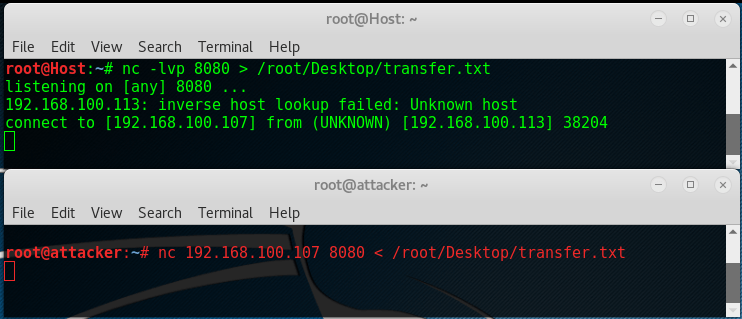
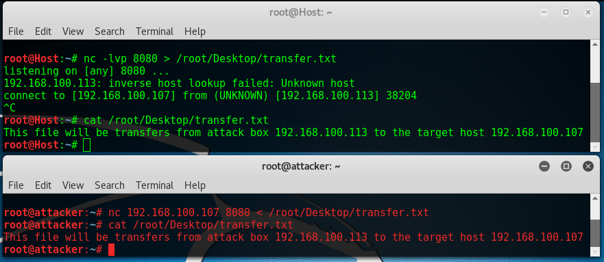

Cyber Security
Cyber Security
Netcat - Web Server¶
Netcat file transfers¶
Let’s assume we already have command execution on a target host and we want to transfer a file from the attack box to this host. Because we’re actually sending the file from the attack box to the remote host, the first thing we have to do is to setup a Netcat listener on the target host and specify the output for the file. We will be using port 8080 for this purpose and the file will be saved to the desktop.
Important
In the following example 192.168.100.113 (Red) is the attacker and 192.168.100.107 (Green) is the target host.
Note
setup a Netcat listener on the target host
The first thing we have to do is to setup a Netcat listener on the target host and specify the output for the file.
1 nc -lvp 8080 > /root/Desktop/transfer.txtNote
On the attack box, connect to port 8080
1 nc 192.168.100.107 8080 < /root/Desktop/transfer.txt
{kind=link}
{kind=link}
We can read both files with the “cat” command. The contents of both files are the same proving that the file has been transferred from the attack box to the remote host. This method of transferring files is platform independent and is successful as long as Netcat is present on both machines.
Although this method works perfectly well in practice there are some better options.